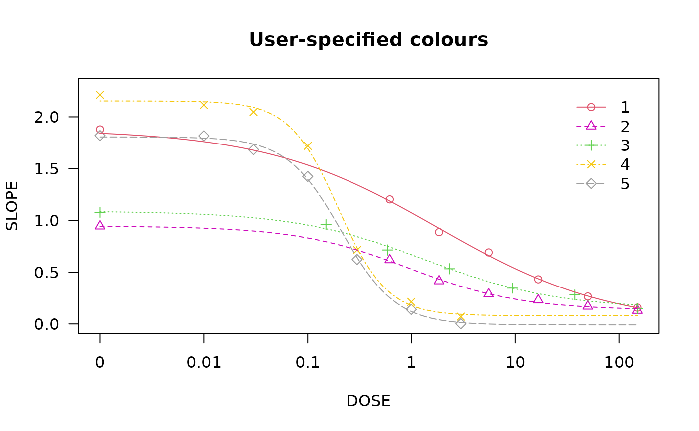

library(drcHelper)
#> Loading required package: drc
#> Loading required package: MASS
#> Loading required package: drcData
#>
#> 'drc' has been loaded.
#> Please cite R and 'drc' if used for a publication,
#> for references type 'citation()' and 'citation('drc')'.
#>
#> Attaching package: 'drc'
#> The following objects are masked from 'package:stats':
#>
#> gaussian, getInitial
library(drc)
library(plyr)Is there a difference between ECx and BMD?
BMD (Benchmark Dose) and ECx (Effect Concentration x) are both important concepts in the fields of toxicology and ecotoxicology, respectively. While they originate from different domains and have distinct definitions and applications, they share similarities in their purpose—specifying a dose or concentration that elicits a specific effect relative to a control or background level.
ECx (Effect Concentration x) is commonly used in ecotoxicology. ECx represents the concentration of a substance that causes a specified effect on a certain percentage of the test population (e.g., 10%, 50%, or 90%) or causes a x% reduction / inhibition / stimulation in average compared to control.
BMD (Benchmark Dose) is primarily used in toxicology. It refers to a dose of a substance that produces a predefined change in response compared to a control group. The flexibility in defining BMD allows for tailored assessments based on the specific toxicological thresholds and regulatory requirements. For example, in bmd package, “excess”, “additional” and “point” are provide for binomial response. “relative”, “extra”, “added”, “excess hybrid”, “additional hybrid”, and “point” are for continuous response. “relative”, “extra”, and “point” are for count response data.
In ecotoxicology area, the two concepts are essentially the same, however, in terms of tools, the calculations use different default model suites, parameterizations, evaluation criteria, and even methodology framework.
- Crump, K. (2002) Critical Issues in Benchmark Calculations from Continuous Data, Critical Reviews in Toxicology 32, 133–153.
Examples
- From the help page of
drc::ED
There are several options for calculating confidence intervals through the argument interval. The option “delta” results in asymptotical Wald-type confidence intervals (using the delta method and the normal or t-distribution depending on the type of response). The option “fls” produces (possibly skewed) confidence intervals through back-transformation from the logarithm scale (only meaningful in case the parameter in the model is log(ED50) as for the llogistic2) models. The option “tfls” is for transforming back and forth from log scale (experimental). The option “inv” results in confidence intervals obtained through inverse regression.
## Model with ED50 as a parameter
finney71.m1 <- drm(affected / total ~ dose, weights = total,
data = finney71, fct = LL.2(), type = "binomial")
summary(finney71.m1)
#>
#> Model fitted: Log-logistic (ED50 as parameter) with lower limit at 0 and upper limit at 1 (2 parms)
#>
#> Parameter estimates:
#>
#> Estimate Std. Error t-value p-value
#> b:(Intercept) -3.10363 0.38773 -8.0047 1.154e-15 ***
#> e:(Intercept) 4.82890 0.24958 19.3485 < 2.2e-16 ***
#> ---
#> Signif. codes: 0 '***' 0.001 '**' 0.01 '*' 0.05 '.' 0.1 ' ' 1
plot(finney71.m1, broken = TRUE, bp = 0.1, lwd = 2)
ED(finney71.m1, c(10, 20, 50), interval = "delta", reference = "control",type="relative")
#>
#> Estimated effective doses
#>
#> Estimate Std. Error Lower Upper
#> e:1:10 2.37896 0.25164 1.88576 2.87217
#> e:1:20 3.08932 0.24372 2.61163 3.56700
#> e:1:50 4.82890 0.24958 4.33974 5.31806
ED(finney71.m1, c(0.10, 0.20, 0.50), interval = "delta", reference = "control",type="absolute")
#>
#> Estimated effective doses
#>
#> Estimate Std. Error Lower Upper
#> e:1:0.1 2.37896 0.25164 1.88576 2.87217
#> e:1:0.2 3.08932 0.24372 2.61163 3.56700
#> e:1:0.5 4.82890 0.24958 4.33974 5.31806
## Referecen could be the upper limit or the control. In this case I am not sure what has been calcuated.
ED(finney71.m1, c(10, 20, 50), interval = "delta", reference = "upper")
#>
#> Estimated effective doses
#>
#> Estimate Std. Error Lower Upper
#> e:1:10 9.80184 0.97020 7.90028 11.70341
#> e:1:20 7.54803 0.55188 6.46636 8.62969
#> e:1:50 4.82890 0.24958 4.33974 5.31806
ED(finney71.m1, c(10, 20, 50), interval = "delta", reference = "control",type="relative")
#>
#> Estimated effective doses
#>
#> Estimate Std. Error Lower Upper
#> e:1:10 2.37896 0.25164 1.88576 2.87217
#> e:1:20 3.08932 0.24372 2.61163 3.56700
#> e:1:50 4.82890 0.24958 4.33974 5.31806
bmd::bmd(finney71.m1, c(0.1),backgType="modelBased",def="excess",interval="inv")
#> BMD BMDL
#> 2.378965 2.020913
## Note that in ED.plus, instead of using interval = "delta", we specifify CI = "delta", to distinguish the option to calculate CI
drcHelper::ED.plus(finney71.m1, c(10, 20, 50), CI = "inv")
#> Estimate Std. Error Lower Upper
#> EC 10 2.378965 0.2516419 1.965051 2.792879
#> EC 20 3.089316 0.2437215 2.688430 3.490202
#> EC 50 4.828897 0.2495753 4.418382 5.239411
## Fitting 4-parameter log-logistic model
ryegrass.m1 <- drm(ryegrass, fct = LL.4())
## Calculating EC/ED values
## Also displaying 95% confidence intervals
ED(ryegrass.m1, c(10, 50, 90), interval = "delta")
#>
#> Estimated effective doses
#>
#> Estimate Std. Error Lower Upper
#> e:1:10 1.46371 0.18677 1.07411 1.85330
#> e:1:50 3.05795 0.18573 2.67053 3.44538
#> e:1:90 6.38864 0.84510 4.62580 8.15148
plot(ryegrass.m1,broken = TRUE)
plot(ryegrass.m1, broken = TRUE, type="confidence", add=TRUE)
## Fitting the Brain-Cousens model
lettuce.m1 <- drm(weight ~ conc,
data = lettuce, fct = BC.4())
plot(lettuce.m1,confidence.level = 0.95)
### Calculating ED[-10]
# This does not work
#ED(lettuce.m1, -10)
## Now it does work
ED(lettuce.m1, c(-10,-20), bound = FALSE) # works
#>
#> Estimated effective doses
#>
#> Estimate Std. Error
#> e:1:-10 1.86458 1.01634
#> e:1:-20 0.96333 1.23014
### Using a different break point.
par(mfrow = c(2, 2))
plot(lettuce.m1, main = "bp = default") # using the default
plot(lettuce.m1, bp = 1e-4, main = "bp = 1e-4")
plot(lettuce.m1, bp = 1e-6, main = "bp = 1e-6")
plot(lettuce.m1, bp = 1e-8, main = "bp = 1e-8")
par(mfrow = c(1,1))
## Fitting model to be plotted below
spinach.m1 <- drm(SLOPE ~ DOSE, CURVE, data = spinach, fct = LL.4())
## Plot with no colours
plot(spinach.m1, main = "Different line types (default)")
## Plot with default colours
plot(spinach.m1, col = TRUE, main = "Default colours")
## Plot with specified colours
plot(spinach.m1, col = c(2,6,3,23,56), main = "User-specified colours")